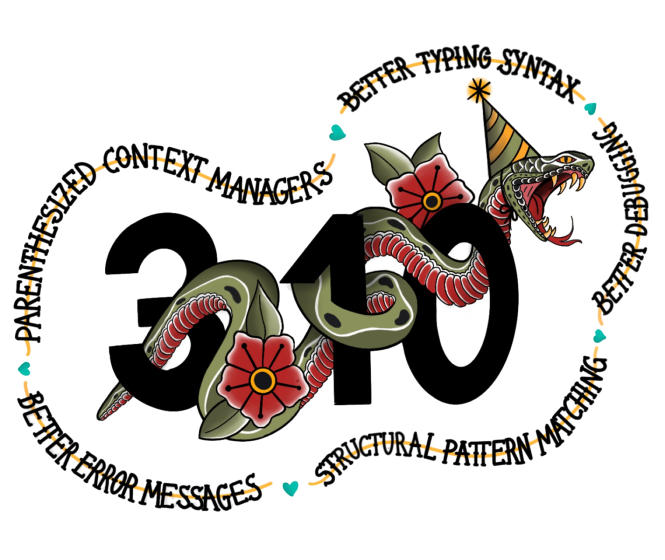

La version 3.10 de python est sortie le 4 octobre 2021 et apporte parmi d’autres améliorations, une nouvelle structure conditionnelle : la structure match ... case.

Un cas simple
Une instruction de ce type existe déjà dans d’autres langages de programmation comme le JavaScript ou le C. Elle permet de tester une valeur et d’exécuter un bloc de code en fonction de la valeur testée. Dans ces deux langages, l’instruction s’appelle switch ... case. En python, elle s’appelle match ... case.
Voici un exemple d’utilisation de l’instruction switch ... case en JavaScript :
Langage JavaScript
let x = 3;
switch (x) {
case 1:
console.log("x est égal à 1");
break;
case 2:
console.log("x est égal à 2");
break;
case 3:
console.log("x est égal à 3");
break;
case 4:
console.log("x est égal à 4");
break;
default:
console.log("x n'est pas égal à 1, 2, 3 ou 4");
}Et maintenant de C :
Langage C
int x = 3;
switch (x) {
case 1:
printf("x est égal à 1");
break;
case 2:
printf("x est égal à 2");
break;
case 3:
printf("x est égal à 3");
break;
case 4:
printf("x est égal à 4");
break;
default:
printf("x n'est pas égal à 1, 2, 3 ou 4");
}C’est la même chose ! On retrouve la même structure dans les deux langages. En python, c’est la même chose :
Python
x = 3
match x:
case 1:
print("x est égal à 1")
case 2:
print("x est égal à 2")
case 3:
print("x est égal à 3")
case 4:
print("x est égal à 4")
case _:
print("x n'est pas égal à 1, 2, 3 ou 4")On peut voir que l’instruction match ... case est très proche de l’instruction if ... elif ... else en python. La différence est que l’instruction match ... case permet de tester plusieurs valeurs d’une variable en une seule instruction. C’est très pratique pour vérifier les valeurs d’une variable.
Par rapport aux autres langages mentionnés, on remarquera qu’il n’est pas nécessaire en python d’utiliser l’instruction break, c’est comme d’habitude l’indentation qui délimite les blocs de code.
Par ailleurs, pas d’instruction default en python, on utilise l’instruction case _ pour gérer le cas par défaut.
Un cas plus complexe
L’instruction match ... case permet de faire des choses beaucoup plus complexes, on peut par exemple ajouter des conditions à chaque cas (source : Sumner (2021)) :
Python
import random
cible = random.randint (0, 100)
nbEssai = 0
gameOver = False
while gameOver == False:
print ( f"Vous avez essayé {nbEssai} fois")
proposition = int (input ("Votre essai : "))
match proposition:
case ( i ) if i < 0 or i > 100:
print("Le nombre doit être compris entre 0 et 100 ")
case ( i ) if i < cible:
print("Trop petit !")
nbEssai += 1
case ( i ) if i > cible:
print("Trop grand!")
nbEssai += 1
case ( i ) if i == cible:
print("Gagné !")
gameOver = TrueDans ce jeu de devinette, la variable proposition est remplacées dans les conditions case par la variable i. C’est une variable temporaire qui prend la valeur de proposition pour chaque cas. On peut donc utiliser i dans les conditions if pour tester la valeur de proposition.
Un dernier exemple pour terminer (source : Moisset (2020)):
Python
reponse = input("Entrez votre prénom et votre nom : ")
match reponse.split():
case [prenom, nom]:
print(f"Bonjour {prenom} {nom} !")
case [mot_unique]:
print(f"Bonjour {mot_unique} ! Il me manque votre nom complet.")
case [prenom, nom, *_]:
print(f"Bonjour {prenom} {nom} ! Vous m'avez donné trop d'informations.")Dans cet exemple, on utilise la méthode split pour découper la chaîne de caractères reponse en une liste de mots. On utilise ensuite cette liste dans les conditions case pour tester le nombre de mots dans la chaîne de caractères. Le symbole *_ est utilisé pour représenter un nombre quelconque de mots.
Voici par exemple le résultat de l’exécution de ce programme dans la console python :
Console python
>>> Entrez votre prénom et votre nom : Jean Dupont
Bonjour Jean Dupont !
>>> Entrez votre prénom et votre nom : Jean
Bonjour Jean ! Il me manque votre nom complet.
>>> Entrez votre prénom et votre nom : Jean Dupont et je suis un génie
Bonjour Jean Dupont ! Vous m'avez donné trop d'informations.Conclusion
L’instruction match ... case est une instruction très puissante qui permet de simplifier le code et de le rendre plus lisible. Elle permet de tester plusieurs valeurs d’une variable en une seule instruction, mais il est aussi possible de tester des conditions plus complexes, comme le type de variable ou la longueur d’une liste, en ajoutant des conditions.
Pour un aperçu complet de toutes les possibilités de l’instruction match ... case, je vous invite à consulter la documentation officielle : https://docs.python.org/fr/3/tutorial/controlflow.html?highlight=match#match-statements et les références ci-dessous.